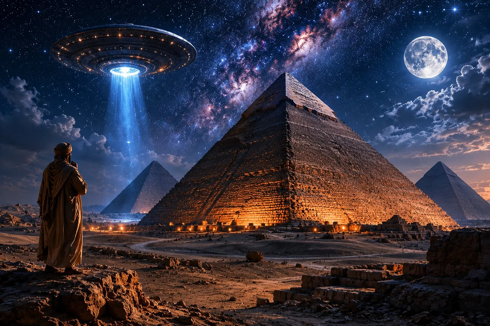

Bugün Giza Piramitleri'nin önünde duran biri yalnızca eski bir yapıya bakmaz. Aslında insanlık tarihinin en büyük sorularından birinin karşısında durur: Binlerce yıl önce, modern vinçler, motorlu araçlar ve çelik makineler yokken bu kadar büyük yapılar nasıl inşa edildi?
Mısır piramitleri bu yüzden yalnızca taş bloklardan oluşan anıtlar değildir. Onlar aynı anda mezar, iktidar sembolü, dini inanç sistemi, mühendislik başarısı ve insan emeğinin neredeyse akıl almaz bir organizasyonudur.
Üstelik bu yapılar hâlâ tüm sırlarını vermiş değil.
Giza'daki Büyük Piramit, yani Keops Piramidi, yaklaşık 4500 yıldır ayakta duruyor. Bu süre içinde krallıklar yıkıldı, imparatorluklar kuruldu, diller değişti, şehirler yok oldu. Ama piramitler hâlâ orada. Çölün ortasında, sanki yalnızca geçmişi değil, insanın sınırlarını da ölçüyormuş gibi duruyor.
Bu yüzden Mısır piramitleri hakkında konuşurken konu hızla tarihten çıkar, gizemlere kayar. Uzaylı teorileri, kayıp medeniyet iddiaları, gizli odalar, lanet hikâyeleri ve "bunu insanlar yapmış olamaz" cümlesi neredeyse piramitlerin gölgesi gibi peşimizden gelir.
Fakat gerçek şu: Piramitlerin hikâyesi, komplo teorilerinden çok daha etkileyici olabilir. Çünkü modern arkeoloji bize artık şunu gösteriyor: Bu yapılar ne tek bir mucizenin ne de açıklanamayan bir teknolojinin ürünüydü. Piramitler, yüzyıllar süren mimari denemelerin, güçlü bir devlet organizasyonunun, dini inançların, mühendislik zekâsının ve binlerce insanın emeğinin sonucuydu.
Peki bu süreç nasıl başladı?
Piramitlerden Önce Ne Vardı?
Mısır piramitleri bir anda ortaya çıkmadı. Bugün Giza'daki dev yapıları gördüğümüzde onları sanki tek seferde tasarlanmış kusursuz anıtlar gibi düşünmeye eğilimliyiz. Oysa piramit mimarisi uzun bir gelişim sürecinin sonucuydu.
Piramitlerden önce Antik Mısır'da seçkin kişilerin ve erken dönem yöneticilerin mezarları genellikle "mastaba" adı verilen yapılardı. Mastabalar dikdörtgen planlı, düz çatılı ve eğimli kenarlara sahip mezar yapılarıydı. Görünüş olarak bugünkü piramitlerden çok farklıydılar ama düşünce olarak aynı dünyanın parçasıydılar: ölen kişinin bedenini korumak, ona ölümden sonraki yaşam için bir alan hazırlamak ve statüsünü mezar mimarisiyle görünür kılmak.
Bu mezarlar yalnızca bir gömü alanı değildi. İçlerinde ölen kişinin eşyaları, yiyecek sunuları ve bazen hizmetkârlarını ya da günlük yaşamını hatırlatan unsurlar bulunabiliyordu. Çünkü Antik Mısırlılar için ölüm, yok oluş değil, başka bir varoluş biçimine geçişti.
Bu inanç, mezar mimarisini giderek daha önemli hâle getirdi. Yönetici sınıf güçlendikçe mezarlar da büyüdü. Mezar büyüdükçe, aslında devletin gücü de görünür hâle geliyordu. Piramit fikrinin doğduğu zemin tam olarak buydu.
Yani piramitler, basit bir mimari hevesin sonucu değildi. Onlar, ölümden sonraki yaşam inancı ile dünyevi iktidarın birleştiği noktada ortaya çıktı.
İlk Piramit Nasıl Ortaya Çıktı?
Mısır tarihinde piramit denildiğinde genellikle akla ilk Giza gelir. Ama piramit fikrinin asıl dönüm noktası Giza'dan önce, Sakkara'da ortaya çıktı.
Bu dönüm noktasının merkezinde Firavun Djoser ve onunla ilişkilendirilen ünlü mimar İmhotep vardır. Djoser için inşa edilen Basamaklı Piramit, Mısır mimarlığında devrim niteliğinde bir gelişmeydi. Çünkü bu yapı, geleneksel mastaba formunun üst üste bindirilmiş bir versiyonu gibi yükseliyordu.
Başka bir deyişle, piramit fikri ilk başta bugün bildiğimiz düzgün yüzeyli üçgen yapı olarak doğmadı. Önce basamaklı bir biçimde gelişti.
Bu çok önemli bir ayrıntı. Çünkü piramitlerin "bir anda ortaya çıkmış açıklanamaz yapılar" olduğu iddiasını zayıflatır. Elimizde bir gelişim çizgisi vardır: mastaba mezarlar, basamaklı piramitler, eğik denemeler ve sonunda düzgün yüzeyli gerçek piramitler.
Djoser'in Basamaklı Piramidi yalnızca bir mezar değildi; aynı zamanda taş mimarinin anıtsal ölçekte kullanılabileceğini gösteren büyük bir deneydi. Antik Mısır, burada artık yalnızca mezar inşa etmiyordu. Gelecekte Giza'ya ulaşacak mimari bir dili deniyordu.
İmhotep'in bu süreçteki rolü de bu yüzden önemlidir. Daha sonraki dönemlerde yalnızca bir mimar ya da devlet görevlisi olarak değil, neredeyse bilgelik figürü gibi hatırlanmıştır. Bu bile bize Antik Mısırlıların mimari bilgiyi ne kadar ciddi gördüğünü gösterir.
Eğik Piramit ve Kırmızı Piramit: Hatalardan Doğan Mükemmellik
Giza Piramitleri'ni anlamak için Djoser'den sonra bir başka önemli firavuna bakmak gerekir: Snefru.
Snefru dönemi, piramit mimarisinin gerçek anlamda deneme-yanılma laboratuvarı gibidir. Çünkü bu dönemde Mısırlılar artık basamaklı formdan düzgün yüzeyli piramide geçmeye çalışıyordu. Fakat bu geçiş kolay olmadı.
Daşur'daki Eğik Piramit bunun en çarpıcı örneklerinden biridir. Piramidin alt kısmı daha dik bir açıyla yükselirken üst kısımda açı değişir. Bu yüzden yapı bugün "Eğik Piramit" olarak bilinir.
Bu eğiklik uzun süre insanlarda merak uyandırdı. Neden böyle yapılmıştı? Bilinçli bir tercih miydi, yoksa mühendislik problemi mi yaşanmıştı?
Yaygın görüşlerden biri, yapının inşası sırasında açının fazla dik olduğunun fark edilmesi ve çökme riskini azaltmak için üst bölümde eğimin değiştirilmiş olmasıdır. Eğer bu yorum doğruysa Eğik Piramit, Antik Mısırlıların yalnızca başarılarını değil, hatalarından nasıl ders çıkardıklarını da gösterir.
Snefru dönemindeki bir diğer büyük adım ise Kırmızı Piramit'tir. Bu yapı, düzgün yüzeyli gerçek piramit formuna ulaşmada önemli bir dönüm noktası kabul edilir. Eğik Piramit'te yaşanan deneyimlerden sonra daha dengeli bir açıyla inşa edilen Kırmızı Piramit, Giza'daki büyük piramitlerin yolunu açan mimari tecrübenin önemli halkalarından biridir.
Bu nedenle Keops Piramidi'ni tek başına bir mucize gibi görmek eksik olur. Keops'un arkasında Djoser'in basamaklı denemesi, Snefru'nun başarısızlıkları, düzeltmeleri ve mimari tecrübesi vardı.
Giza, bir başlangıç değil; uzun bir mühendislik hafızasının zirvesiydi.
Keops Piramidi Neden İnşa Edildi?
Giza'daki Büyük Piramit, Firavun Keops için inşa edildi. Keops, Eski Krallık döneminin 4. Hanedan firavunlarından biriydi ve onun adına yapılan bu yapı, bugün hâlâ Antik Mısır'ın en etkileyici simgelerinden biri olarak kabul ediliyor.
Ama burada önemli bir noktayı kaçırmamak gerekir: Piramit yalnızca "firavunun mezarı" değildi.
Evet, temel işlevi firavunun ölümden sonraki yaşamına hizmet eden bir mezar kompleksi oluşturmaktı. Fakat piramit aynı zamanda firavunun tanrısal konumunu, devletin örgütlenme gücünü ve Mısır kozmolojisindeki düzen fikrini temsil ediyordu.
Antik Mısırlılar için evrenin düzeni son derece önemliydi. Firavun bu düzenin yeryüzündeki merkez figürlerinden biriydi. Onun ölümü, yalnızca bir hükümdarın ölümü değil, kozmik düzenin devamlılığıyla ilgili bir olaydı. Bu yüzden firavunun mezarı da sıradan bir yapı olamazdı.
Piramit, firavunun ölümden sonraki yolculuğu için inşa edilen anıtsal bir geçiş alanıydı. Mezar odaları, geçitler, tapınaklar, sunu alanları ve çevredeki diğer yapılar bu bütünün parçalarıydı. Bu yolculuğa hazırlanmak için bedenin korunması büyük önem taşıyordu ve Antik Mısır'da mumyalama tam da bu nedenle ortaya çıkmıştı.
Bu noktada piramitleri yalnızca "dev taş yığınları" olarak görmek büyük hata olur. Onlar, Antik Mısır'ın ölüm, iktidar, tanrısallık ve sonsuzluk anlayışının mimari biçimidir.
Keops Piramidi Ne Kadar Büyüktü?
Keops Piramidi'ni anlamak için sayılar bazen kelimelerden daha çarpıcıdır.
Büyük Piramit'in ilk yüksekliği yaklaşık 146 metreydi. Bugün dış kaplama taşlarının büyük kısmı kaybolduğu için yüksekliği biraz daha düşüktür. Yapıda yaklaşık 2,3 milyon taş blok kullanıldığı düşünülür. Bu blokların çoğu birkaç ton ağırlığındaydı; bazı iç bölümlerde kullanılan granit bloklar ise çok daha ağırdı.
Bu sayıları okumak kolay. Ama gerçekten hayal etmek zor.
Çünkü 2,3 milyon taş blok demek, yalnızca taş kesmek değil; bu taşları ocaktan çıkarmak, taşımak, düzenlemek, yerleştirmek, ölçmek, hizalamak ve bunu yıllar boyunca sürdürülebilir bir sistem içinde yapmak demektir.
Dahası, piramidin kenarları ve yönelimi şaşırtıcı derecede hassastır. Büyük Piramit'in ana yönlere oldukça doğru biçimde hizalanmış olması, Antik Mısırlıların gökyüzünü ve ölçüm tekniklerini ciddi şekilde kullandığını düşündürür.
Burada "mucize" gibi görünen şey aslında başka bir gerçeği gösterir: Antik Mısır'da bilgi, yalnızca teorik değildi. Astronomi, matematik, iş gücü yönetimi ve mimari pratik aynı projede birleşebiliyordu.
Ve belki de piramitleri bu kadar etkileyici yapan şey tam olarak budur. Onlar yalnızca yüksek oldukları için değil, bu kadar büyük ölçekte bu kadar düzenli yapılabildikleri için şaşırtıcıdır.
Piramitler Nasıl Planlandı?
Mısır piramitleri hakkında konuşurken çoğu insanın dikkati doğal olarak taş bloklara yönelir. Çünkü tonlarca ağırlığındaki taşların nasıl taşındığı ilk bakışta en büyük gizem gibi görünür.
Ancak birçok arkeolog ve mühendis için asıl etkileyici olan şey taşların ağırlığından çok planlamadır.
Çünkü Keops Piramidi gibi bir yapıyı inşa etmek için yalnızca güçlü işçiler yeterli değildir. Öncelikle neyi, nereye ve hangi ölçülerle inşa edeceğinizi bilmeniz gerekir.
Bugün bir gökdelen yapılacağı zaman mühendisler bilgisayar destekli çizimler, lazer ölçüm sistemleri ve gelişmiş hesaplamalar kullanıyor. Antik Mısırlıların elinde ise bunların hiçbiri yoktu.
Buna rağmen Giza Piramitleri şaşırtıcı derecede hassas ölçülerle inşa edildi.
Araştırmalar, Büyük Piramit'in ana yönlere son derece doğru şekilde hizalandığını gösteriyor. Yapının kenarları kuzey, güney, doğu ve batı yönlerine çok küçük hata paylarıyla yerleştirilmişti.
Bu durum uzun yıllardır araştırmacıların ilgisini çekiyor.
Peki Antik Mısırlılar bunu nasıl başardı?
Kesin cevap hâlâ bilinmiyor. Ancak birçok uzman, gökyüzünün bu süreçte önemli rol oynadığını düşünüyor.
Antik Mısırlılar astronomi konusunda sanıldığından çok daha bilgiliydi. Nil Nehri'nin taşkınlarını takip ediyor, takvim sistemleri geliştiriyor ve yıldız hareketlerini gözlemliyorlardı.
Bazı araştırmacılara göre piramitlerin yönlendirilmesinde Kutup Yıldızı çevresinde dönen yıldız grupları kullanılmış olabilir. Bazıları ise ip sistemleri ve gözlem noktalarıyla hassas ölçümler yapıldığını düşünüyor.
Kesin yöntem tartışmalı olsa da sonuç ortada.
Yaklaşık 4500 yıl önce inşa edilen bir yapı, bugün bile mühendislerin dikkatini çekecek kadar doğru biçimde hizalanmış durumda.
Ancak planlama yalnızca yön belirlemekten ibaret değildi.
Piramitlerin çevresinde tapınaklar, geçit yolları, işçi yerleşimleri, depolar ve liman sistemleri bulunuyordu. Yani Büyük Piramit aslında tek başına bir yapı değil, devasa bir kompleksin merkez noktasıydı.
Bu nedenle bazı tarihçiler Giza'yı yalnızca bir mezarlık alanı olarak değil, Antik Mısır'ın en büyük devlet projelerinden biri olarak değerlendiriyor.
Çünkü milyonlarca taş bloktan oluşan bir yapıyı inşa etmekten daha zor olan şey, binlerce insanı yıllar boyunca aynı hedef doğrultusunda organize edebilmektir.
Ve belki de piramitlerin en az konuşulan başarısı budur.
Taşları taşımak büyük bir mühendislik problemiydi.
Ama on binlerce insanı, malzemeyi, yiyeceği ve zamanı yönetmek çok daha büyük bir organizasyon başarısıydı.
Taşlar Nereden Getirildi?
Piramitlerden söz edildiğinde insanların aklına genellikle tek bir yapı gelir. Oysa Büyük Piramit aslında milyonlarca ayrı parçanın birleşmesinden oluşan dev bir yapboz gibidir.
Ve bu parçaların hepsi aynı yerden gelmiyordu.
Uzun yıllar boyunca araştırmacılar piramitlerde kullanılan taşların nereden çıkarıldığını anlamaya çalıştı. Bugün elimizdeki arkeolojik veriler sayesinde bu sorunun büyük bölümüne cevap verebiliyoruz.
Öncelikle şunu bilmek gerekiyor:
Keops Piramidi'nin büyük kısmı yerel kireç taşından inşa edildi. Giza Platosu'nun çevresindeki taş ocaklarından çıkarılan milyonlarca blok, yapının ana gövdesini oluşturuyordu.
Bu mantıklı bir tercihti.
Çünkü birkaç tonluk milyonlarca taşı yüzlerce kilometre taşımak yerine, mümkün olduğunca yakındaki kaynakları kullanmak çok daha pratikti.
Fakat iş bununla bitmiyordu.
Piramit yalnızca dışarıdan görünen taşlardan oluşmuyordu. İç bölümlerde çok daha dayanıklı ve ağır malzemeler kullanılmıştı.
Özellikle Kral Odası'nın bulunduğu bölümlerde kullanılan kırmızı granit bloklar dikkat çekicidir.
Bu granitler Giza'nın yakınından gelmiyordu.
Yaklaşık 800 kilometre güneyde bulunan Asvan bölgesindeki taş ocaklarından çıkarılıyorlardı.
Bugün bile bu mesafeyi düşündüğümüzde etkilenmemek zor.
Çünkü bazı granit blokların ağırlığı onlarca tonu bulabiliyordu.
Peki Antik Mısırlılar bu devasa taşları yüzlerce kilometre boyunca nasıl taşıdı?
Bu sorunun cevabı büyük ölçüde Nil Nehri'nde yatıyor.
Nil Nehri Piramitlerin Gizli Kahramanıydı
Modern insan bazen piramitleri çölün ortasında yükselen yalnız yapılar gibi düşünür.
Fakat Antik Mısır için asıl hayat kaynağı çöl değil, Nil'di.
Nil yalnızca içme suyu sağlayan bir nehir değildi.
Tarımı mümkün kılıyor, şehirleri birbirine bağlıyor ve ülkenin en önemli ulaşım hattı olarak hizmet veriyordu.
Bugün kamyonların yaptığı işi o dönemde büyük ölçüde nehir tekneleri yapıyordu.
Araştırmacılar, piramitlerde kullanılan birçok taşın Nil üzerinden taşındığını düşünüyor.
Özellikle Tura bölgesinden getirilen kaliteli beyaz kireç taşları bunun en iyi örneklerinden biridir.
Bu taşlar piramitlerin dış yüzeyini kaplamak için kullanılıyordu.
Bugün gördüğümüz kaba taş görünüm aslında piramitlerin orijinal hâli değildir.
İlk yapıldıklarında dış yüzeyleri parlak beyaz kireç taşıyla kaplıydı.
Güneş ışığı altında adeta parladıkları düşünülüyor.
Bazı tarihçiler, Giza Piramitleri'nin kilometrelerce uzaktan görülebilecek kadar etkileyici bir görüntüye sahip olduğunu belirtir.
Yani bugün gördüğümüz piramitler aslında zamanın aşındırdığı birer gölgedir.
Orijinal görünümleri muhtemelen çok daha çarpıcıydı.
Wadi el-Jarf Papirüsleri Piramitlerin Sırlarını Nasıl Aydınlattı?
Uzun süre boyunca piramitlerin yapım süreci hakkında birçok teori üretildi.
Fakat son yıllarda yapılan keşiflerden biri araştırmacılara doğrudan Antik Mısır'dan gelen bir tanıklık sundu.
Kızıldeniz kıyısındaki Wadi el-Jarf bölgesinde bulunan papirüsler, şimdiye kadar keşfedilen en eski papirüs belgeleri arasında yer alıyor.
Bu belgelerden biri özellikle dikkat çekti.
Çünkü Merer adlı bir görevlinin günlük kayıtlarını içeriyordu.
Merer ve ekibi, Tura taş ocaklarından çıkarılan kaliteli kireç taşlarının taşınmasından sorumluydu.
Papirüslerde taşların teknelere yüklenmesi, Nil üzerindeki yolculuklar ve inşaat alanına ulaştırılması gibi süreçler anlatılıyordu.
Bu keşif son derece önemliydi.
Çünkü ilk kez piramitlerin yapımıyla doğrudan ilişkili lojistik faaliyetleri anlatan bir belgeye ulaşılmıştı.
Bir anda teorilerin yerini gerçek insanların tuttuğunu düşün.
Artık elimizde yalnızca tahminler değil, yaklaşık 4500 yıl önce yaşamış bir görevlinin tuttuğu kayıtlar vardı.
Bu kayıtlar bize şunu gösteriyor:
Piramitlerin inşası yalnızca mühendislik değil, aynı zamanda devasa bir lojistik operasyondu.
Taşların çıkarılması gerekiyordu.
Taşların taşınması gerekiyordu.
İşçilerin beslenmesi gerekiyordu.
Araçların üretilmesi gerekiyordu.
Bütün bunların yıllar boyunca aksatılmadan sürdürülmesi gerekiyordu.
Belki de piramitlerin en etkileyici yönlerinden biri budur.
Çünkü insanlar çoğu zaman yalnızca sonuca bakıyor.
Oysa asıl mucize, milyonlarca parçayı onlarca yıl boyunca aynı hedef doğrultusunda bir araya getirebilen organizasyon gücü olabilir.
Ve bu bizi bir sonraki büyük soruya götürüyor:
Bu dev projede çalışan insanlar kimlerdi?
Piramitleri gerçekten köleler mi inşa etmişti, yoksa yıllardır anlatılan hikâye eksik mi kalıyordu?
Piramitleri Gerçekten Köleler Mi İnşa Etti?
Mısır piramitleri hakkında en yaygın inanışlardan biri şudur:
Binlerce köle, kavurucu güneş altında kırbaçlanarak dev taş blokları çekiyordu.
Bu görüntü o kadar yaygınlaştı ki birçok insan bunu tarihsel bir gerçek olarak kabul ediyor.
Hollywood filmleri, belgeseller ve popüler kültür yıllarca aynı sahneyi tekrar etti.
Ancak modern arkeoloji ortaya çıktıkça bu hikâyenin önemli ölçüde eksik olduğu anlaşılmaya başladı.
Bugün birçok araştırmacı, Giza Piramitleri'nin yalnızca köle emeğiyle inşa edildiği fikrinin gerçeği yansıtmadığını düşünüyor.
Bu görüşün değişmesinin en önemli nedeni, piramitlerin çevresinde yapılan arkeolojik kazılar oldu.
Giza'da İşçi Köyleri Bulundu
1990'lı yıllardan itibaren yapılan kazılar sırasında araştırmacılar, piramitlerin yakınlarında büyük işçi yerleşimleri keşfetti.
Bu keşif son derece önemliydi.
Çünkü ilk kez piramitlerin yapımında çalışan insanların nasıl yaşadığına dair doğrudan kanıtlar ortaya çıkıyordu.
Bulunan yerleşimlerde:
- ekmek üretim alanları,
- büyük mutfaklar,
- depolar,
- uyuma alanları,
- yönetim binaları
tespit edildi.
Bu durum araştırmacılara önemli bir şey gösterdi:
Piramit inşaatı rastgele insanların zorla çalıştırıldığı düzensiz bir süreç değildi.
Ortada planlı ve organize edilmiş dev bir çalışma sistemi vardı.
İşçiler Nasıl Besleniyordu?
Arkeologların en dikkat çekici bulgularından biri de hayvan kemikleriydi.
Kazılarda bulunan kemikler üzerinde yapılan incelemeler, bölgede düzenli olarak büyük miktarda sığır, keçi ve koyun tüketildiğini ortaya koydu.
Bu durum ilk bakışta önemsiz görünebilir.
Ancak Antik Mısır'da et, herkesin her gün ulaşabildiği sıradan bir yiyecek değildi.
Dolayısıyla bu kadar büyük miktarda et tüketimi, piramit işçilerinin devlet tarafından desteklendiğini düşündürüyor.
Bazı araştırmacılar, işçilerin günlük kalori ihtiyacını karşılamak için düzenli olarak yüksek proteinli besinlerle beslendiğini öne sürüyor.
Bu da yıllardır anlatılan "aç bırakılmış köle ordusu" görüntüsüyle pek uyuşmuyor.
Kemikler Bize Başka Ne Anlatıyor?
Kazılarda bulunan insan iskeletleri de ilginç bilgiler verdi.
Bazı işçilerin kemiklerinde kırık izleri bulundu.
Fakat daha ilginç olan şey, bu kırıkların iyileşmiş olmasıydı.
Bu durum, yaralanan bazı işçilerin tedavi edildiğini düşündürüyor.
Eğer işçiler tamamen değersiz görülen kölelerden oluşsaydı, ağır şekilde yaralanan insanların tedavi edilmesi için bu kadar çaba harcanması beklenmezdi.
Elbette bu durum herkesin rahat koşullarda yaşadığı anlamına gelmiyor.
Piramit inşaatı son derece zor ve tehlikeli bir işti.
İnsanlar ağır taşlarla çalışıyor, yüksek yapılara tırmanıyor ve sert iklim koşullarıyla mücadele ediyordu.
Ancak eldeki kanıtlar, işçilerin tamamen gözden çıkarılmış insanlar olmadığını gösteriyor.
Peki Kimler Çalışıyordu?
Bugün birçok araştırmacının üzerinde uzlaştığı görüşlerden biri, piramit inşaatında farklı iş gücü gruplarının görev aldığıdır.
Bu gruplar arasında:
- taş ustaları,
- mühendisler,
- marangozlar,
- tekne yapımcıları,
- taşıma ekipleri,
- yönetici görevliler
yer alıyordu.
Ayrıca Nil Nehri'nin taşkın dönemlerinde tarım faaliyetlerinin azalması nedeniyle bazı çiftçilerin de dönemsel olarak devlet projelerinde çalıştığı düşünülüyor.
Yani piramitler yalnızca bir inşaat projesi değildi.
Aslında tüm ülkenin kaynaklarını ve insan gücünü bir araya getiren ulusal bir proje gibiydi.
Taş Bloklar Nasıl Taşındı?
Piramitlerin inşasıyla ilgili tüm sorular arasında belki de en ünlüsü budur:
"Tonlarca ağırlığındaki taşları nasıl taşıdılar?"
Aslında uzaylı teorilerinin, kayıp teknoloji iddialarının ve sayısız komplo teorisinin ortaya çıkmasının temel nedeni de budur.
Çünkü insanlar birkaç tonluk bir taşı hareket ettirmeyi bile zor bulurken, Antik Mısırlıların milyonlarca taş blokla çalışmış olması ilk bakışta akıl almaz görünür.
Fakat burada önemli bir noktayı unutmamak gerekir.
Piramitlerin inşasında kullanılan her taş aynı ağırlıkta değildi.
Blokların büyük kısmı birkaç ton ağırlığındaydı. Ancak iç bölümlerde kullanılan bazı granit bloklar onlarca tona ulaşabiliyordu.
Bu yüzden araştırmacılar uzun yıllar boyunca taşların nasıl taşındığını anlamaya çalıştı.
Kızaklar Neden Bu Kadar Önemliydi?
Antik Mısır duvar resimlerinde sık sık büyük ahşap kızaklar görülür.
Bu kızaklar tekerlekli değildi.
Taş bloklar ya da büyük heykeller doğrudan kızakların üzerine yerleştiriliyor ve insanlar tarafından çekiliyordu.
İlk bakışta bu yöntem oldukça ilkel görünebilir.
Fakat burada küçük bir ayrıntı her şeyi değiştiriyor.
Duvar resimlerinden bazılarında insanların kızağın önündeki kuma su döktüğü görülüyor.
Uzun yıllar boyunca bu detayın ne işe yaradığı bilinmedi.
Ta ki modern bilim insanları bunu test edene kadar.
Islak Kum Teorisi
2014 yılında yapılan deneyler son derece ilginç sonuçlar ortaya koydu.
Araştırmacılar kuru kum üzerinde ağır yük çekmenin çok zor olduğunu gösterdi.
Ancak kum belirli bir oranda nemlendirildiğinde durum değişiyordu.
Islak kum, kızağın önünde oluşan direnç miktarını önemli ölçüde azaltıyordu.
Başka bir deyişle:
Antik Mısırlılar kumu çamur yapmak için değil, sürtünmeyi azaltmak için ıslatıyor olabilirlerdi.
Bu basit fikir bile piramitlerin inşasına bakış açısını değiştirdi.
Çünkü uzun süre gizemli teknoloji gibi görünen bazı şeylerin aslında fizik kurallarının akıllıca kullanılmasından ibaret olduğu anlaşıldı.
Rampalar Gerçekten Kullanıldı Mı?
Piramitlerin inşası hakkında konuşurken bir noktaya kadar ilerlemek mümkündür. Taşların hangi ocaklardan çıkarıldığını biliyoruz. Nil Nehri'nin taşımacılıkta büyük rol oynadığını biliyoruz. Kızakların kullanıldığını ve ıslak kumun sürtünmeyi azaltmış olabileceğini biliyoruz.
Fakat tüm bu bilgiler başka bir soruyu beraberinde getiriyor:
Taşlar piramidin tabanına kadar getirildiyse, yüzlerce sıra yukarı nasıl çıkarıldı?
İşte araştırmacıların onlarca yıldır tartıştığı konu tam olarak bu.
Günümüzde birçok uzman, piramitlerin inşasında bir tür rampa sisteminin kullanıldığı konusunda hemfikir. Ancak sorun şu ki, rampaların kullanılmış olması ile tam olarak nasıl kullanıldığını bilmek aynı şey değil.
İlk bakışta en mantıklı çözüm düz bir rampa gibi görünür. Böyle bir sistemde işçiler taş blokları geniş bir eğim boyunca yukarı çekebilirlerdi. Fikir basittir ve uygulanabilir görünür. Ancak araştırmacılar hesaplama yaptığında yeni bir problem ortaya çıktı.
Piramit yükseldikçe rampanın da yükselmesi gerekiyordu.
Keops Piramidi'nin orijinal yüksekliği yaklaşık 146 metreydi. Böyle bir yüksekliğe ulaşmak için yeterince düşük eğimli bir rampa inşa edildiğinde, rampanın uzunluğu inanılmaz boyutlara ulaşıyor.
Bu durum araştırmacıları başka çözümler aramaya yöneltti.
Bu kez spiral rampa teorileri ortaya çıktı.
Bu görüşe göre rampa piramidin çevresinde dönerek yükseliyordu. Böylece düz bir rampaya göre çok daha az alan kullanılmış oluyordu.
Belki de en gerçekçi açıklama budur.
Antik Mısırlılar tek bir mucizevi teknik kullanmadı. Yüzyıllar boyunca geliştirdikleri bilgi birikimini, mühendislik deneyimini ve iş gücünü bir araya getirerek farklı çözümleri aynı projede kullandılar.
Uzaylı Teorileri Neden Ortaya Çıktı?

Piramitler hakkında yapılan tartışmaların büyük bölümü mühendislik üzerine olsa da, kamuoyunun ilgisini en çok çeken konu genellikle başka bir sorudur:
"Piramitleri gerçekten insanlar mı yaptı?"
Bu soru ilk bakışta tuhaf gelebilir. Çünkü arkeologlar uzun zamandır piramitlerin Antik Mısırlılar tarafından inşa edildiğini biliyor. İnşaat alanlarına ait kalıntılar, işçi yerleşimleri, taş ocakları, papirüsler ve yüzlerce yıllık araştırma bunu destekliyor.
Buna rağmen uzaylı teorileri onlarca yıldır popülerliğini koruyor.
Peki neden?
Aslında bunun nedeni piramitlerden çok insan psikolojisiyle ilgili olabilir.
Çünkü insanlar olağanüstü görünen şeyler karşısında olağanüstü açıklamalar aramaya eğilimlidir.
Özellikle Keops Piramidi'nin boyutları düşünüldüğünde bu tepki anlaşılabilir.
Yaklaşık 4500 yıl önce yaşayan insanların milyonlarca taş blokla çalıştığını kabul etmek, çoğu kişiye uzaylı hikâyelerinden daha zor gelir.
Çünkü modern insan geçmiş toplumları farkında olmadan küçümseme eğilimindedir.
Elektrikleri yoktu.
Motorları yoktu.
Bilgisayarları yoktu.
Bu yüzden onları ilkel olarak düşünmek kolaydır.
Ancak tarih bize sürekli aynı dersi verir: Bir toplumun modern teknolojiye sahip olmaması, karmaşık işler başaramayacağı anlamına gelmez.
Bugüne kadar yapılan araştırmalarda piramitlerin inşasında dünya dışı teknoloji kullanıldığına dair hiçbir güvenilir kanıt bulunamadı.
Aslında bilim insanlarının büyük kısmı için piramitlerin etkileyici tarafı da tam olarak burada yatıyor.
Çünkü bu yapılar bilinmeyen bir medeniyetin değil, insanlığın başarısını temsil ediyor.
Piramitlerin İçinde Gerçekten Gizli Odalar Var Mı?
Piramitlerin dış görünüşü ne kadar etkileyiciyse, içleri de en az o kadar merak uyandırıyor. Hatta birçok insan için asıl gizem dışarıda değil, taşların ardında saklı olan koridorlarda başlıyor.
Keops Piramidi'nin içine giren bir ziyaretçi, dışarıdan gördüğü dev taş dağın içinde beklediğinden çok daha karmaşık bir yapıyla karşılaşır. Yapının içerisinde Kral Odası, Kraliçe Odası olarak adlandırılan bölümler ve bunlara ulaşan koridorlar bulunur.
Ancak asıl ilginç olan şey, binlerce yıldır incelenen bir yapının hâlâ yeni keşiflere açık olmasıdır.
2017 yılında yürütülen ScanPyramids projesi kapsamında yapılan çalışmalar, Büyük Piramit'in içinde daha önce bilinmeyen büyük bir boşluğun varlığını ortaya çıkardı. Bu keşif dünya çapında büyük ilgi gördü.
Bu alan yeni bir oda olabilir.
İnşaat sırasında bırakılmış yapısal bir boşluk olabilir.
Yük dağılımını dengelemek için tasarlanmış mühendislik çözümü olabilir.
Ya da henüz hiç düşünülmemiş başka bir amaç taşıyor olabilir.
Şu an için kesin bir cevap yok.
Belki de piramitlerin büyüsünün önemli bir kısmı burada yatıyor.
Yaklaşık 4500 yıl önce inşa edilen bir yapının içinde, bugün kullandığımız ileri teknolojilere rağmen hâlâ tam olarak açıklayamadığımız alanlar bulunabiliyor.
Piramitler İlk Yapıldığında Nasıl Görünüyordu?
Bugün Giza Piramitleri'ni ziyaret eden insanların çoğu, karşılarında devasa ama kaba taşlardan oluşan yapılar görür. Binlerce yıl boyunca rüzgâra, güneşe ve insan müdahalesine maruz kalmış bu anıtlar artık doğal çevrenin bir parçası gibi görünür.
Fakat Antik Mısırlıların gördüğü manzara bundan çok farklıydı.
Piramitler ilk tamamlandığında dış yüzeyleri, Tura bölgesinden getirilen yüksek kaliteli beyaz kireç taşı bloklarıyla kaplıydı. Bu taşlar yalnızca dayanıklı değildi; aynı zamanda son derece pürüzsüz bir yüzey oluşturuyordu. Güneş ışığı üzerlerine vurduğunda yapının adeta parladığı düşünülüyor.
Bazı araştırmacılar, açık havada ve uygun ışık koşullarında piramitlerin kilometrelerce uzaktan fark edilebildiğini öne sürüyor.
Bugün gördüğümüz piramitler, aslında zamanın aşındırdığı hâlleridir. Dış kaplamaların büyük kısmı sonraki dönemlerde sökülerek farklı yapılarda kullanıldı.
Başka bir ifadeyle, Keops Piramidi'nin bugünkü görüntüsü etkileyiciyse, ilk tamamlandığı dönemde yarattığı etkiyi hayal etmek bile zordur.
Mısır'da Aslında Çok Daha Fazla Piramit Var
İnsanların büyük bölümü Mısır piramitlerinden söz edildiğinde yalnızca Giza'daki üç büyük yapıyı düşünür. Oysa bu durum, Roma denildiğinde yalnızca Kolezyum'u hatırlamaya benzer.
Çünkü Mısır'da bugüne kadar yüzü aşkın piramit tespit edildi.
Giza Piramitleri en ünlüleri olabilir, ancak piramit geleneğinin tamamını temsil etmezler.
Aslında bu durum piramitlerin nasıl ortaya çıktığını anlamak açısından da önemlidir. Çünkü Keops Piramidi bir başlangıç noktası değil, uzun bir gelişim sürecinin sonucudur.
Bu gelişim çizgisi bize önemli bir şey gösteriyor.
Piramitler bir anda ortaya çıkmadı.
Her yeni yapı, bir öncekinin deneyimlerini taşıyordu. Mimarlar hata yapıyor, sorunlarla karşılaşıyor ve sonraki projelerde bunları düzeltiyordu.
İnsanları Hâlâ Neden Bu Kadar Etkiliyorlar?
Piramitler yalnızca taş bloklardan oluşan yapılar değildir.
Onlar aynı zamanda insanlığın kendisi hakkında anlattığı bir hikâyedir.
Bu yapılara baktığımızda yalnızca bir firavunun mezarını görmeyiz. İnsanların ölüm karşısındaki düşüncelerini, sonsuzluk arayışını, inançlarını ve büyük hedefler uğruna bir araya gelme becerisini de görürüz.
Belki de bu yüzden piramitler binlerce yıldır ilgi çekmeye devam ediyor.
Çünkü her nesil onlara farklı bir gözle bakıyor.
Bir mühendis yapının hassas ölçülerine hayran kalıyor.
Bir tarihçi devlet organizasyonunu inceliyor.
Bir arkeolog yeni ipuçları arıyor.
Bir turist ise yalnızca büyüklük karşısında şaşkınlığa kapılıyor.
Fakat hepsi aynı noktada buluşuyor:
Yaklaşık 4500 yıl önce yaşayan insanlar, bugün bile dünyanın konuştuğu bir eser bırakmayı başardı.
Belki de piramitlerin asıl sırrı burada yatıyor.
Onlar yalnızca Antik Mısır'ın değil, insanlığın neler başarabileceğinin de bir hatırlatıcısı.
Ve bu yüzden, binlerce yıl sonra bile aynı soruyu sordurmaya devam ediyorlar:
"Gerçekten bunu nasıl başardılar?"
Sık Sorulan Sorular
Mısır piramitleri kaç yaşındadır?
Giza'daki büyük piramitler yaklaşık 4500 yıl önce, Eski Krallık döneminde inşa edilmiştir.
Keops Piramidi kaç taş bloktan oluşur?
Araştırmacılar Keops Piramidi'nde yaklaşık 2,3 milyon taş blok kullanıldığını tahmin etmektedir.
Piramitleri gerçekten köleler mi yaptı?
Günümüzde birçok araştırmacı, piramitlerin yalnızca köle emeğiyle inşa edildiği görüşünü desteklememektedir. Arkeolojik bulgular, organize işçi topluluklarının projede görev aldığını göstermektedir.
Piramitleri uzaylıların yaptığı doğru mu?
Bu iddiayı destekleyen güvenilir bir bilimsel kanıt bulunmamaktadır. Arkeolojik veriler piramitlerin Antik Mısırlılar tarafından inşa edildiğini göstermektedir.
Piramitlerin içinde hâlâ keşfedilmemiş alanlar var mı?
Evet. Özellikle son yıllarda yapılan muon taramaları, Büyük Piramit içinde daha önce bilinmeyen bazı boşlukların varlığını ortaya çıkarmıştır.
Mısır'da kaç piramit vardır?
Bugüne kadar Mısır'da 100'den fazla piramit keşfedilmiştir.
Piramitler neden inşa edildi?
Piramitler, firavunların ölümden sonraki yaşam yolculuğu için inşa edilen mezar komplekslerinin merkez yapılarıydı.
Piramitlerin dışı neden bugün pürüzlü görünüyor?
Çünkü dış yüzeyi kaplayan beyaz kireç taşı bloklarının büyük bölümü zamanla sökülmüş veya zarar görmüştür.
Kaynakça
- Mark Lehner – The Complete Pyramids
- Miroslav Verner – The Pyramids
- Zahi Hawass – The Secrets of Ancient Egypt
- Pierre Tallet – Les Papyrus de la Mer Rouge
- AERA (Ancient Egypt Research Associates) araştırmaları
- ScanPyramids Mission raporları
- Journal of Egyptian Archaeology yayınları
- Near Eastern Archaeology yayınları